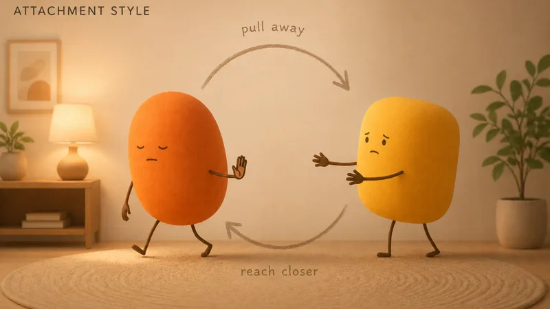

The avoidant partner gets the villain edit in every relationship story. Cold. Emotionally unavailable. Commitment-phobe. The internet has built a small industry out of warning people about you.
Here is what the villain edit leaves out: most avoidant people love hard and quietly, show up reliably, and genuinely suffer inside the pattern they run. The pulling away is not a verdict on the relationship. It is an old reflex, firing in a place the relationship never touched.
This is the guide for the person who does the pulling, written without the wagging finger. Your partner is welcome to read over your shoulder.
What avoidant attachment feels like from the inside
From the inside, it rarely feels like avoiding love. It feels like protecting something.
Closeness comes with a meter you did not install. A wonderful weekend together, and somewhere on Sunday evening the meter reads full, and a pressure starts: a need for one evening alone, an itch toward your own space, a sudden fascination with a work project. Affection is real on the way in; what overflows is the dependence, the being-counted-on, the watched feeling.
And then there is the flaw-finding, the part avoidant people rarely admit and instantly recognize: things get serious, and your brain starts producing reasons. The way they chew. A blandness in their texts. It is rarely about the flaw. The brain manufactures exits when the room starts feeling small.
None of this means the love is fake. It means the love and the alarm are wired to the same switch.
Where it comes from
Attachment researchers, in the same line of work summarized by the Cleveland Clinic, link the avoidant pattern to childhoods where needing people went poorly. Not always dramatically. Sometimes the caregivers were loving but uncomfortable with feelings, brisk with tears, quick to praise self-sufficiency. The lesson lands early and deep: needs are a burden, handle yourself, keep the soft parts inside.
A child in that weather makes a smart trade: stop reaching, stop hurting. The toddlers in Ainsworth's experiments who looked away when a parent returned, calm-faced while their heart monitors raced, were running this exact program at age two.
The program works. That is the trouble. It produces capable, independent adults who are fine, eternally fine, and quietly starving in a way they have no name for.

The signs, in everyday form
- You need recovery time after closeness, like social jet lag, and feel guilty about it.
- "What are you feeling?" produces a system error. You know there is something in there; retrieving it mid-conversation is the problem.
- You keep relationships slightly underdefined for as long as possible.
- Your independence is non-negotiable, and a partner needing you a lot reads as pressure before it reads as love.
- You handle hard times alone by default, and your partner finds out about the bad week after it ends.
- When things get serious, you find yourself itemizing their flaws with sudden energy.
If several of these are yours: this is roughly one in five people. You are not broken, rare, or doomed. You are running an old program that no longer matches your life.

Something small is in the works
We're quietly making something for the two of you. Leave your email and we'll surprise you when it's ready.
No spam, no newsletter. One good email when it’s ready.
How to let someone closer without the trapped feeling
Schedule your space instead of stealing it. The trapped feeling thrives on space taken by retreat: cancellations, vagueness, the slow fade. Space asked for warmly does the same job without the damage. "I'm at my best with one evening to myself a week" is an honest sentence that protects both of you. Most partners can give what they understand.
Say the small true thing in the moment. Full vulnerability on demand is not the assignment. One sentence is: "today drained me", "that meant a lot", "I'm not sure what I feel yet, give me until tomorrow." Closeness is built from sentence-sized deposits, and the meter fills slower than you fear.
Notice the flaw-factory. When the inventory of their shortcomings starts up, ask one question before believing it: did anything get more serious lately? If yes, the flaws are probably exhaust from the alarm, not data about your partner.
Stay one beat past the urge. The exit reflex says leave the conversation, the room, the weekend. Staying ninety extra seconds, while the urge peaks and passes, is how the system learns that closeness is survivable. That tiny rep, done often, is most of what therapy would have you practice. Speaking of which: this is the pattern therapists see constantly and treat well, as we cover in our guide to couples therapy.
Independence you choose is freedom. Independence you can't switch off is a wall with good branding.
Loving someone avoidant
If you are the partner reading this, probably with feelings: the central fact is that the retreat is regulation, not rejection. Your avoidant partner pulls away to manage an internal alarm, not to punish you, and they usually come back faster when the leaving is allowed.
What works: low-pressure warmth. Affection without an immediate ask attached. Naming things once instead of campaigning. Granting space graciously, because space given resentfully arrives as another demand. And noticing their love in its actual dialect, which is often acts and reliability rather than speeches, something our guide to the love languages can help translate.
What doesn't: pursuit, tests, and processing-the-relationship marathons. If you are anxiously attached yourself, this pairing is the classic loop, and the way you each read the other's moves is half the trouble. Read our anxious attachment guide alongside this one, ideally together.
For your next conversation
- "What does needing space feel like for you, right before you take it?"
- "What's a way I could be close to you that doesn't feel like pressure?"
- "What did asking for help look like in your house growing up?"
The avoidant pattern was built by a kid who figured out how to need less because needing more wasn't working. That kid deserves some credit. The strategy got you here.
It just doesn't have to run the whole house anymore. Doors can stay where they are, unused, while you sit a little further inside the room.
Questions couples actually ask
Do avoidant partners actually love?
Deeply, and often quietly. Avoidant attachment changes how love is expressed and protected, not whether it exists. Many avoidant people show love through reliability and acts rather than words and closeness, and feel far more than their face reports.
Why do avoidant people pull away after intimacy?
Because closeness raises an old alarm. Somewhere early, depending on someone proved unsafe or unwelcome, so the system learned to cap it. After a very close weekend, the cap kicks in: distance, busyness, a small manufactured friction. It is regulation, not rejection.
Can avoidant attachment change?
Yes. The same earned-security research that applies to anxious attachment applies here. It changes through safe relationships where space is granted without punishment, through naming the pattern, and often fastest through therapy. The exit reflex quiets when staying keeps proving survivable.
Should I chase an avoidant partner when they withdraw?
Pursuit usually deepens the retreat. What works better is steady, low-pressure presence: name it once, warmly, then genuinely give the room. Avoidant partners tend to return faster when the door is left open than when it is knocked on.
Something small is in the works
A little surprise for couples is in the works. Be the first to know.
No spam, no newsletter. One good email when it’s ready.